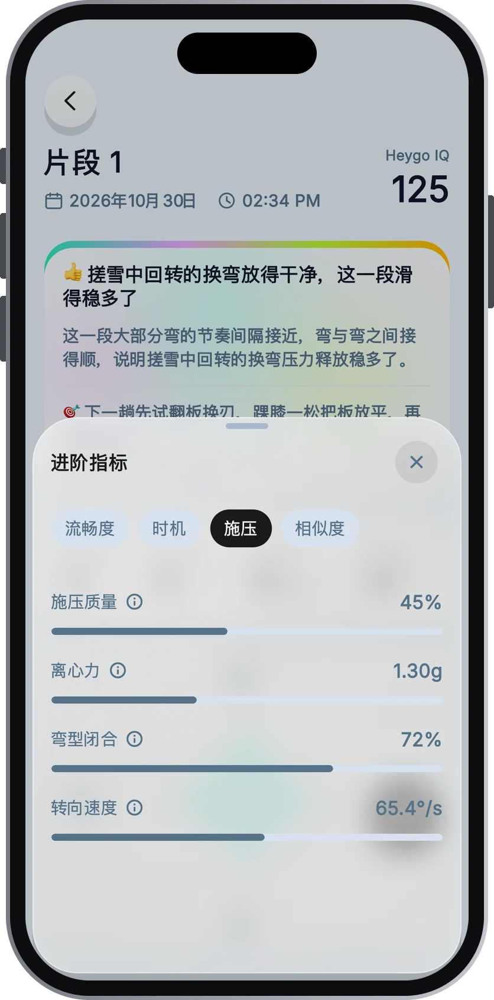
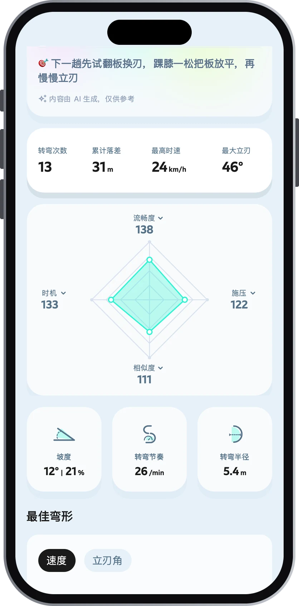
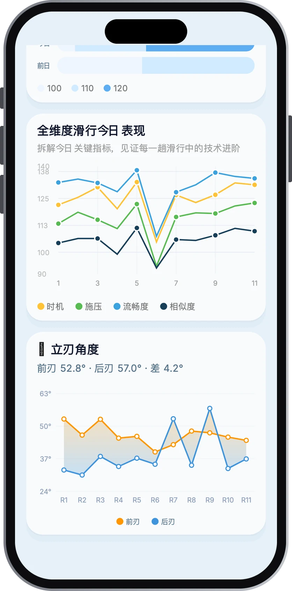
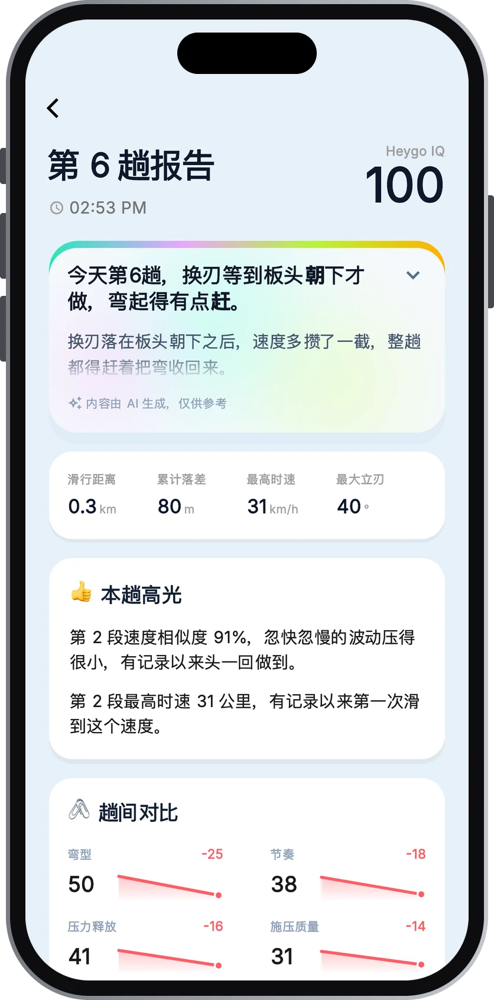
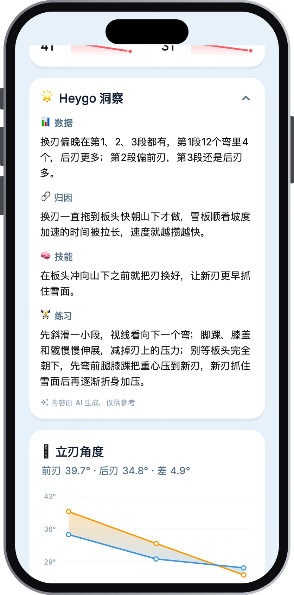
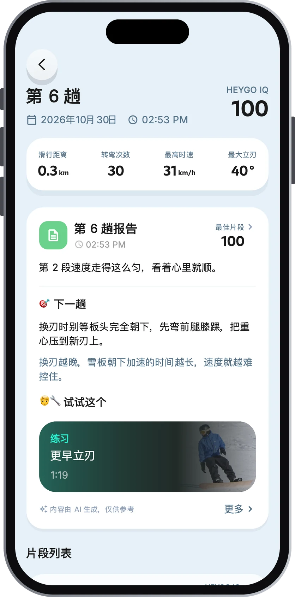
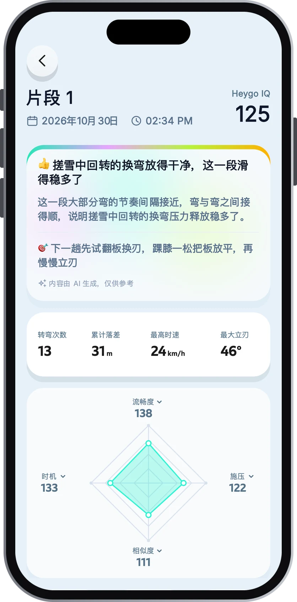
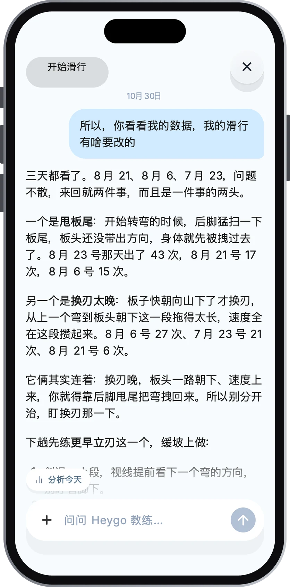
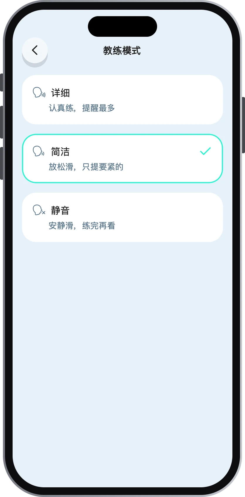

Heygo 的传感器和 App 一起工作：把你脚下每一个弯读出来、讲明白，再告诉你下一趟练什么。
读数据、理解数据、理解你，最后都落到 App 里你能看到、能照着做的东西上。
两枚传感器夹在左右雪鞋侧壁，打开 App 点 Go 就开始记录。不用做任何校准动作，滑几个弯它就认准了安装位置。
双脚动作以 100Hz 持续记录。Heygo 把一趟拆成一段段、一个个弯，认出你在走刃还是搓雪，记下立刃角、速度和弯形。
每一段都按时机、施压、流畅度、相似度四个维度给出 Heygo IQ。每次都和你自己之前比，找出属于你的问题。
滑完一趟坐上缆车就有单趟报告和语音复盘；一天结束有全天报告，讲清问题在哪、为什么、下一趟练哪节课。
每一段滑行都会得到一个 Heygo IQ。它由时机、施压、流畅度、相似度四个维度组成，每个维度下面是可以点开细看的进阶指标，全部来自你双脚的真实动作。
四个维度的平均分是 126，和总分 125 基本一致。哪个维度拖了后腿，一眼就能看出来。
搓雪时，弯与弯之间是否一致也算进总分。
走刃时更看重弯型和负荷，前后刃相似度不计入总分，只体现在相似度这个维度上。
时机 133 · 该换刃的时候换没换、换得够不够早。
在板头冲向滚落线之前有多早完成换刃。越早，上半弧越完整，弯中越好控速。
换刃后刃角建立得快不快、稳不稳。
换刃时旧弯的压力有没有及时、平顺地放掉。
施压 122 · 弯中压力给得稳不稳、够不够。
弯中承受的负荷有多大。速度和刃角都到位，负荷才上得去。
雪板在弯内改变方向的快慢，是否和目标弯型匹配。
出弯时有没有横切滚落线，用完整弯型自然控速。
整个弯里压力施加和释放是否连续、集中、可重复。
流畅度 138 · 动作连不连贯、弯与弯之间接得顺不顺。
弯是不是圆润饱满的 C 形，而不是直冲后急甩。
从放平、立刃到释放，刃角变化是不是一条顺滑的曲线。
连续弯的时长和幅度是否均匀。
相似度 111 · 前刃和后刃是否一样好、每个弯是否稳定可重复。
前刃和后刃的立刃方式是否接近。
前刃弯和后刃弯的速度是否接近。
前刃弯和后刃弯的半径是否接近，线路会不会往一侧漂。
App 里还会单独展示前刃相似度、后刃相似度，帮你看清哪一侧更不稳定。这两项只作展示，不参与打分。
维度内各指标的配比在所有动作下都一样；总分会按走刃或搓雪换一套权重。所有数字都来自同一位滑手 10 月 30 日的真实一段。





除了 Heygo IQ，每一趟、每一段都会自动记下这些基础数据，不需要你手动开始或结束。
下面每一张都是 Heygo App 的真实界面，数据来自同一位单板滑手的同一个雪天。
「11 趟滑完，搓雪整体比上一次上雪发挥得好，收尾那几趟还把状态往上提了一截。」第一句就是拿今天和你上一次比，它记得你上次滑成什么样。
Heygo 洞察把今天拆成四步：数据（今天记到 19 次甩板尾，多在后刃）→ 归因（转弯一开始后脚先动，板头还没接上方向）→ 技能（让前脚先改变刃角）→ 练习。
Heygo IQ 占比把今天和前一个雪天放在一起，一眼看出更多时间滑在了更高的分段。
时机、施压、流畅度、相似度四条线随每一趟变化；第 6 趟的低谷和之后的回升清清楚楚。

后脚先动，板尾被扫出去
前脚先改刃角，后脚再跟
换刃时前膝、前踝多弯一点
重心压前脚，带板头进弯


这一天的第 6 趟分数掉到 100。趟间对比直接列出：弯型 −25、节奏 −18、压力释放 −16、施压质量 −14。
「换刃一直拖到板头快朝山下才做，雪板顺着坡度加速的时间被拉长，速度就越攒越快。」原因落在具体哪几段、前刃还是后刃。


报告点出问题之后，直接给出「下一趟」怎么做，并推荐对应的课程「更早立刃」。
每节课都有真人示范视频，按目标、减压、立刃、平板分成几段，可以跳着看。下面还有分步要领，照着做就行。


当天最好的一段，Heygo IQ 125：「这一段大部分弯的节奏间隔接近，弯与弯之间接得顺，换弯的压力释放稳多了。」
最佳弯形按真实轨迹还原，可以切换按速度或按立刃角着色，前刃、后刃各占半边。
13 个弯，每个弯的最高时速、最大立刃和转弯半径都在，前刃弯和后刃弯用图标分开。



它会翻你的历史记录，把问题归成一两件事，告诉你先练哪一个、怎么练、做对了是什么感觉。下面是一段真实对话。
它知道你现在走到哪一步，会按顺序给你下一阶段：更早立刃之后接身体折叠，再往后才是走刃。


详细、简洁、静音三种模式。认真练的时候多提醒，放松滑的时候只说要紧的。

传感器只认识数字。每一站，都把数字往「教练看得懂的东西」推进一步。点开每一站，看 Heygo 是怎么一步步读懂你的。
内容整理自 Heygo × GLOW 11 月 1 日公开课课件，示例数据来自上文同一位滑手。背后是 200 万+ 次真实滑行数据的积累。